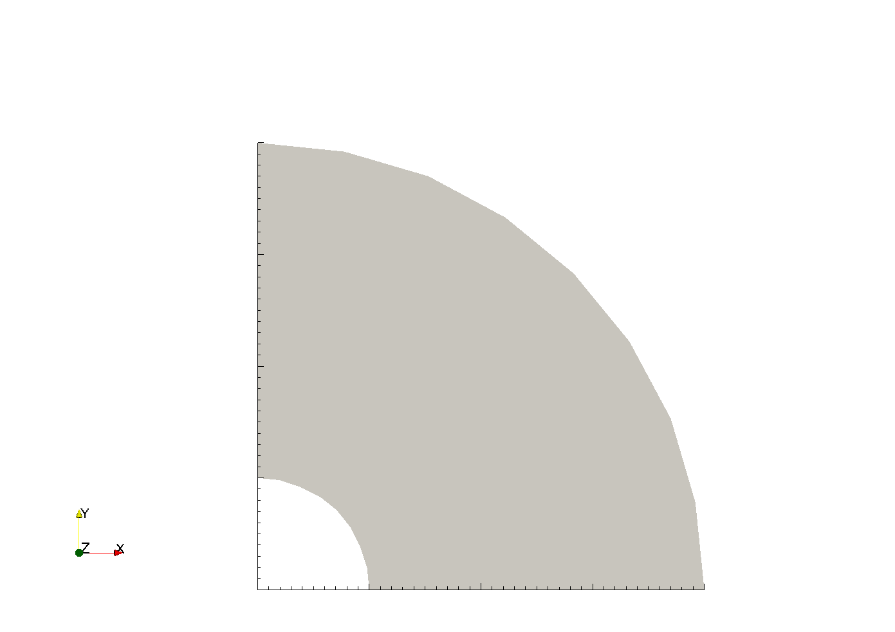
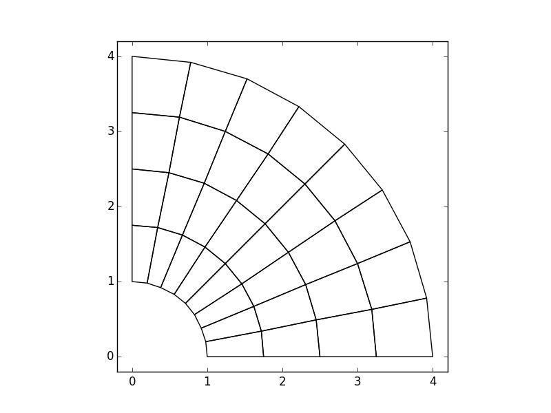

2.5. Plane Elasticity, 2¶
2.5.1. Objective¶
This example demonstrates the use of the Plane2DModel to solve a plane strain problem.
2.5.2. Problem Description¶
A pressurized cylinder is modeled as a plane strain elastic solid. The thickness of the cylinder is 1 and the material is linear elastic with constant Young’s modulus \(E\) and Poisson’s ratio \(\nu\). The cylinder is modeled with quarter-symmetry and a unit pressure is applied to the inner face.
2.5.3. Model Script¶
The problem is defined and solved in pyfem2 as follows:
"""
pyfem2 tutorial demo program: Plane strain elasticity
"""
from numpy import *
from pyfem2 import *
# Create the finite element model and assign a mesh
V = Plane2DModel()
V.GenesisMesh('../meshes/QuarterCylinderQuad4.g')
# Define an element block of plane strain elements
V.ElementBlock('ElementBlock1', ALL)
# Create a material and define the elastic properties
V.Material('Material-1')
V.materials['Material-1'].Elastic(Mu=1., Nu=.499)
V.AssignProperties('ElementBlock1', PlaneStrainQuad4, 'Material-1', t=1)
# Fix the X displacement of Nodeset-200 and Y displacement of Nodeset-201.
# Nodeset-200 defines the LHS and Nodeset-201 the bottom side, respectively.
V.PrescribedBC('Nodeset-200', X)
V.PrescribedBC('Nodeset-201', Y)
# Apply a unit pressure on inside face
V.Pressure('Surface-1', 1.)
# Solve the model and write results to the ExodusII database
V.Solve()
V.WriteResults('PlaneElasticity.exo')
2.5.4. How does it work?¶
The complete code can be found in the file tutorials/Plane1.py. We now examine the preceding program in detail.
The first lines of the program,
from numpy import *
from pyfem2 import *
import objects from the numpy and pyfem2 namespaces in to the program.
numpy is a python package providing numerical data
types and procedures. The key import from the pyfem2 library is Plane2DModel.
The statement
V = Plane2DModel()
creates the finite element model. The mesh is assigned to the model by
V.GenesisMesh('../meshes/QuarterCylinderQuad4.g')
which reads the mesh parameters from a ExodusII formatted file.
{kind=link}
The finite element model V requires that every element in the mesh be
assigned an element type and material constitutive relations. The assignment
occurs by grouping elements of the same type together in to element blocks and
then assigning to those element blocks material and fabrication properties.
For this problem, every element in the mesh is a PlaneStrainQuad4 four-node
plane strain element (a quadralateral element with two degrees of freedom per
node). The element block, named ElementBlock1, containing all of the
elements in the mesh is created by:
V.ElementBlock('ElementBlock1', ALL)
The symbol ALL informs the ElementBlock method to assign all elements
in the mesh to the block ElementBlock1. Material properties are defined by
the Material method and elements in a block are assigned material and
fabrication properties by the AssignProperties method:
V.Material('Material-1')
V.materials['Material-1'].Elastic(Mu=1., Nu=.499)
V.AssignProperties('ElementBlock1', PlaneStrainQuad4, 'Material-1', t=1)
The method AssignProperties takes as input the name of the element block
to which properties are being assigned, the element type for elements in the
block, the material model name, and any element fabrication properties. For
PlaneStrainQuad4 elements, the thickness t is the only fabrication
property.
The next step is to specify the boundary conditions \(u_x(x=0,y)=0\) and \(u_y(x,y=0)=0\):
V.PrescribedBC('Nodeset-200', X)
V.PrescribedBC('Nodeset-201', Y)
The nodesets Nodeset-200 and Nodeset-201 are defined in the mesh file.
The pressure on the inside surface of the cylinder is defined by
V.Pressure('Surface-1', 1.)
Finally, the unknown displacements are determined by solving the model and the model results are written to an ExodusII output file
V.Solve()
Perhaps the easiest way to view results is by:
V.Plot2D(deformed=1)
With the deformed keyword, the deformed coordinates are plotted.
{kind=link}
The results can also be written to an ExodusII file and viewed in ParaView
V.WriteResults('PlaneElasticity.exo')